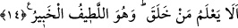

gizlediklerini, kalplerinde gizli olarak duran sırlarını kuşatmakta çok bilgi sâhibidir.
Öylesine ki bu gizli olan şeyler nerdeyse kalpten hiç ayrılmayacak biçimde gizli bile
olsa Allah Teâlâ bunu bilmektedir. O hâlde sizin kalbinize yapışık olanları bildiğine
göre gizlice söyledikleriniz ve açığa vurduklarınız O’na nasıl kapalı kalabilir?
“Zâtu’s-sudûr” ifâdesiyle, göğüs kafeslerinin içindeki kalplerin kasdedilmesi de
mümkündür. Buna göre âyetin mânâsı; “O, kalpleri ve kalplerin durumlarını bilir. O’na
kalbin sırlarından hiç bir sır gizli kalmaz” demek olur.
Kâşânî bu âyeti şöyle tefsir eder: O kalplerde olanı bilir. Çünkü kalplerde olan
gizlilikler bizâtihî onun ilminin ta kendisidir. Şu hâlde kalpleri yaratan onları tesviye
eden, sırlarının aynası olarak yoktan var eden yaratıcı, bu kalplerin gizliliklerini nasıl
olur da bilemez?
Âyet-i kerîmede “zâtu’s-sudûr” yerine çoğul olarak “zevâtu’s-sudûr” denmemesinin
sebebi, cinsin irâde edilmiş olmasından dolayıdır. Burada “zat”, sâhip mânâsına gelen
“zi”nin müennesidir. Âyet-i kerîmede mevsuf hazfedilmiş, sıfat onun yerine getirilmiştir.
Şu hâlde âyet-i kerîmenin mânâsı; “O, kalplerde olan gizlilikleri bilir” şeklindedir.
Bunlar, insanın kalbinde mevcûd olup insanı bâzı şeyleri yapmaya teşvik edici duygular
ve bâzı şeyleri de yapmaktan engelleyen faktörlerdir. Âyet-i kerîmede kalpte bulunan bu
duygular, kalbe yapışık ve yerleşik olarak gösterilmiştir. Bu tıpkı süte “zü’l-inâ” (kab
sâhibi), annenin karnındaki yavruya da “zû batnihâ/anne karnının sâhibi” denmesi
kabilindendir.
14. Hiç yaratan bilmez mi? O, en ince işleri görüp bilmektedir ve her şeyden
haberdardır.
Ey gizleyen ve açığa vuran! “Hiç yaratan bilmez mi?” Bütün her şeyi hikmetine
uygun olarak yoktan var eden Yaratıcı, gizleneni ve açığa vurulanı hiç bilmez mi? Bu
ifâdede yer alan soru istifhâm-ı inkârîdir. Allah Teâlâ’nın ilminin her şeyi
kuşatamayacağına dâir kanâati ortadan kaldırmak için sevk edilmiştir. Âyetin metninde
yer alan “men” kelimesi “ya’lemu” fiilinin fâilidir. Bu kelimenin aynı fiilin mef’ûlü
olmak üzere mansup olması da mümkündür. Bu takdirde âid zamiri mahzuf olmuş olur.
Dolayısıyla cümle: “Onu yaratan, hiç bilmez mi?” şeklinde takdir olunabilir.
“O, en ince işleri görüp bilmektedir ve her şeyden haberdardır.”
“el-Latîf,” her şeyi en ince ayrıntısına varıncaya kadar bilen demektir. Allah Teâlâ o
derece latiftir ki kapkaranlık bir gecede kara bir kaya parçasının üzerindeki siyah
karıncanın ayak izlerini bile bilir. O aynı zamanda eşyanın içini de bilir.
Kâşânî’nin tefsirine göre O, yarattığı her şeyin iç yüzünü ve dışa vuran durumunu
kuşatmıştır ve hepsini bilmektedir. Hattâ o şey, Allah’ın katında gerçekte bâtınen ve